Injection Technique a Caserta, Napoli e Salerno: il sorriso che vuoi senza limare i denti. Una valida alternativa alle faccette, meno invasiva e più economica.
Con la Injection Technique correggiamo forma, colore e spazi dei denti aggiungendo resina composita su un progetto che vedi e approvi prima. Per pazienti da Aversa, Caserta e Napoli.
Valutazione 5.0 su Google · oltre 300 recensioni
Cos'è il composite bonding?
Il composite bonding è un trattamento di odontoiatria estetica che aggiunge sul dente una resina composita dello stesso colore dello smalto, per correggerne forma, colore, dimensione e piccoli spazi. È un trattamento additivo: nella maggior parte dei casi non richiede di limare il dente né l'anestesia, e il risultato è visibile subito.
Lo trovi anche come bonding dentale, faccette in composito o, nella grafia più cercata, composit bonding: sono nomi diversi per la stessa famiglia di trattamenti.
Per cosa si usa
Il bonding è indicato quando denti e gengive sono sani e vuoi migliorare l'estetica del sorriso in modo conservativo.
Spazi tra i denti
Chiude diastemi e piccoli “buchi” tra gli incisivi.
Denti scheggiati
Ricostruisce bordi rotti o irregolari.
Denti piccoli o corti
Riproporziona denti conoidi, consumati o troppo corti.
Colore e macchie
Copre discromie che lo sbiancamento non risolve.
Injection Technique: il bonding progettato, non improvvisato
La Injection Technique (Injection Moulding Technique) è un metodo di composite bonding in cui il composito fluido viene iniettato in una mascherina trasparente ricavata dal progetto del tuo nuovo sorriso. Così il risultato in bocca riproduce la forma che hai visto e approvato.
Visita, foto e controllo delle gengive
Valutiamo denti, morso e salute parodontale. Il bonding si fa solo su gengive sane.
Progetto del sorriso
Disegniamo forma e proporzioni dei nuovi denti su un modello (wax-up), anche in digitale.
Prova in bocca (mock-up)
Vedi in anteprima il risultato direttamente sui tuoi denti e possiamo correggerlo insieme.
Mascherina trasparente
Dal progetto realizziamo una mascherina in silicone trasparente con piccoli fori di iniezione.
Iniezione del composito
Il composito fluido viene iniettato dente per dente e indurito con una luce speciale.
Rifinitura e lucidatura
Rifiniamo margini e superfici per un effetto naturale e brillante.
Prevedibile
Il risultato segue un progetto, non solo la modellazione a mano libera.
Conservativo
Lo smalto naturale viene preservato: si aggiunge, non si toglie.
Veloce
Più denti trattati in poche sedute, con risultato immediato.
Reversibile e riparabile
Ritocchi e riparazioni si fanno in studio senza rifare tutto.
Un sorriso bello dura solo su gengive sane
Il bonding su gengive infiammate rischia di non durare. Siamo specialisti della parodontite: per questo ogni percorso estetico parte da un controllo parodontale e, se serve, dalla cura delle gengive.
Oppure fai il test di autovalutazione.
Composite bonding o faccette in ceramica?
Entrambi migliorano l'estetica del sorriso, ma con approcci diversi. La scelta giusta dipende dal tuo caso e si definisce in visita. Leggi il confronto completo →
| Composite bonding (Injection) | Faccette in ceramica | |
|---|---|---|
| Limatura del dente | Assente o minima | Di solito necessaria |
| Sedute | Poche, risultato immediato | Più sedute + laboratorio |
| Durata indicativa | 5–10 anni | 10–15 anni e oltre |
| Resistenza alle macchie | Media, serve lucidatura periodica | Alta |
| Riparabilità | Si ripara in studio | Di solito va rifatta la faccetta |
| Costo | Più contenuto | Più elevato |
Estetica dentale con l'occhio dello specialista
Lo studio del Dott. Giovanni Iuorio ad Aversa unisce oltre 30 anni di esperienza, odontoiatria mini-invasiva con microscopio operatorio e laser, e un approccio che mette al primo posto la conservazione dei denti naturali.
Casi di composite bonding
Risultati reali ottenuti con la Injection Technique nel nostro studio di Aversa. Foto pubblicate con il consenso dei pazienti.
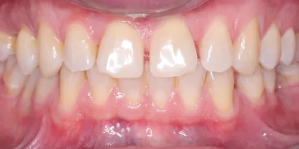
Prima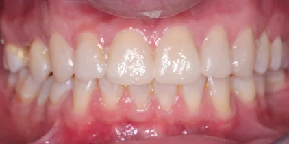
DopoChiusura del diastema tra gli incisivi centrali e riproporzione dei laterali.
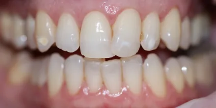
Prima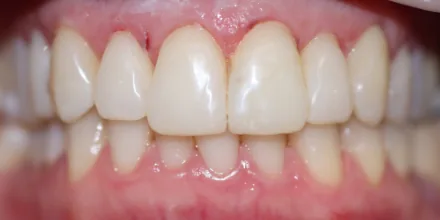
DopoArmonizzazione di forma e lunghezza degli incisivi superiori irregolari.
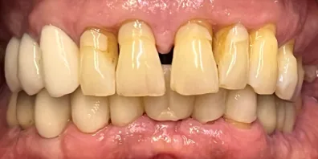
Prima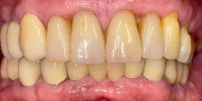
DopoChiusura del diastema e ricostruzione dei bordi consumati.
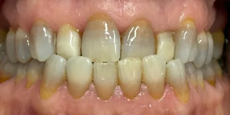
Prima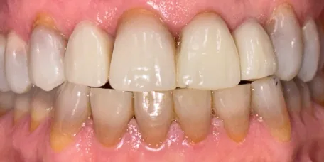
DopoCorrezione di discromie e allungamento degli incisivi superiori.
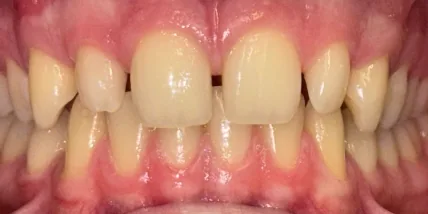
Prima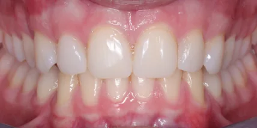
DopoChiusura di spazi multipli tra i denti anteriori superiori.
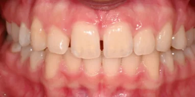
Prima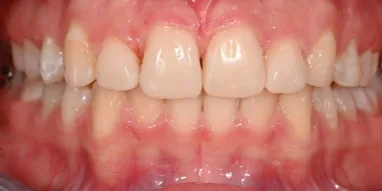
DopoChiusura del diastema centrale e riproporzione degli incisivi.
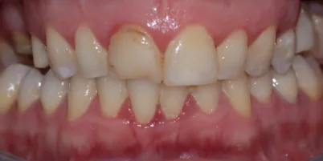
Prima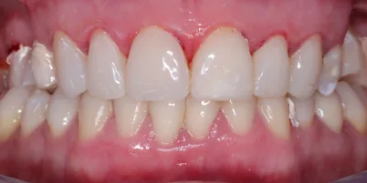
DopoRicostruzione di incisivi scheggiati e con vecchie otturazioni.
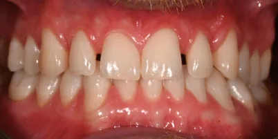
Prima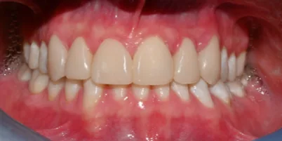
DopoChiusura degli spazi tra incisivi centrali e laterali.
Chiusura di ampi diastemi e ricostruzione di un incisivo laterale piccolo.
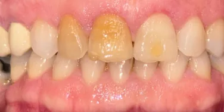
Prima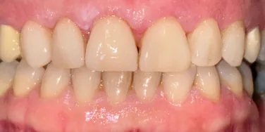
DopoMascheramento di un incisivo scurito e uniformità del colore.
Quanto dura e come mantenerlo
Con una buona igiene orale e controlli periodici, il composite bonding dura in media dai 5 ai 10 anni. Nel tempo la resina può perdere brillantezza o scurirsi leggermente: una lucidatura in studio la riporta allo stato iniziale.
Il composito non si sbianca come lo smalto naturale: se desideri denti più chiari, lo sbiancamento si fa prima del bonding.
Igiene professionale
Ogni 4–6 mesi, con strumenti adatti al composito.
Attenzione a caffè, vino e fumo
Sono le principali cause di macchie sulla resina.
Niente unghie o penne tra i denti
Evita abitudini che possono scheggiare i bordi.
Bite se digrigni
Protegge il bonding durante la notte.
Composite bonding: le risposte alle domande più comuni
Cos'è il composite bonding?
È un trattamento di odontoiatria estetica che aggiunge sul dente una resina composita dello stesso colore dello smalto, per correggerne forma, colore, dimensione e piccoli spazi. È additivo: nella maggior parte dei casi non richiede di limare il dente né l'anestesia, e il risultato si vede subito.
Cos'è la Injection Technique?
È un metodo per eseguire il composite bonding: il nuovo sorriso viene progettato prima, poi si realizza una mascherina in silicone trasparente che viene posizionata sui denti e riempita con composito fluido attraverso piccoli fori. Il risultato riproduce fedelmente il progetto approvato dal paziente. Come funziona, passo per passo.
Composite bonding, composit bonding, bonding dentale e faccette in composito sono la stessa cosa?
Sì, sono nomi diversi per lo stesso tipo di trattamento con resina composita. “Composit bonding” è una grafia diffusa di composite bonding; le faccette in composito sono un'applicazione del bonding che copre tutta la superficie visibile del dente.
Il composite bonding fa male?
Di solito no. Poiché il materiale viene aggiunto e lo smalto non viene limato, nella maggior parte dei casi non serve l'anestesia.
Quanto dura il composite bonding?
Con una buona igiene orale e controlli periodici dura in media dai 5 ai 10 anni. Può essere lucidato, ritoccato o riparato in una seduta senza rifare tutto il lavoro. Approfondisci la durata.
Quanto costa il composite bonding ad Aversa e Napoli?
Il costo dipende dal numero di denti, dalla complessità del caso e dalla progettazione del sorriso. In genere è inferiore a quello delle faccette in ceramica. Da Iuorio Odontoiatri il preventivo viene definito durante la prima visita.
Il composite bonding si macchia?
La resina può scurirsi nel tempo con caffè, tè, vino e fumo e non si sbianca come lo smalto naturale. Per questo lo sbiancamento, se desiderato, si fa prima del bonding. Lucidature periodiche mantengono la brillantezza.
Chi non può fare il composite bonding?
Non è indicato in caso di affollamento dentale grave, problemi importanti di morso, denti molto distrutti o gengive infiammate. In presenza di parodontite bisogna prima curare le gengive: per questo la valutazione parodontale è il primo passo del percorso.
Dove fare il composite bonding vicino a Napoli e Caserta?
Iuorio Odontoiatri esegue il composite bonding con Injection Technique nella sede di Aversa, in Via Raffaello Sanzio 46, facilmente raggiungibile da Napoli e da Caserta, e nella sede di Salerno in Via Santi Martiri Salernitani 15.
Guide sul composite bonding
Tre guide scritte e riviste dal nostro studio per scegliere con consapevolezza.
Composite bonding o faccette in ceramica?
Limatura, durata, costi e risultati a confronto, per capire quale trattamento fa per te.
Leggi la guida → DurataQuanto dura il composite bonding?
In media 5–10 anni: cosa lo fa durare di più, quando ritoccarlo e come mantenerlo.
Leggi la guida → Il metodoInjection Technique: come funziona
Il bonding a iniezione passo per passo, dal progetto del sorriso al risultato finale.
Leggi la guida →Scopri se il composite bonding fa per te
Raccontaci cosa vorresti migliorare del tuo sorriso: ti ricontattiamo entro 24 ore per fissare una visita.
Studio Iuorio Odontoiatri – Aversa (CE)
Dott. Giovanni Iuorio · Dott.ssa Morena Iuorio
Via Raffaello Sanzio, 46 – 81031 Aversa
Tel. 081 890 2073 · WhatsApp 338 777 6558
Studio Iuorio Odontoiatri – Salerno
Dott.ssa Morena Iuorio
Via Santi Martiri Salernitani, 15 – Salerno
WhatsApp 379 275 7303